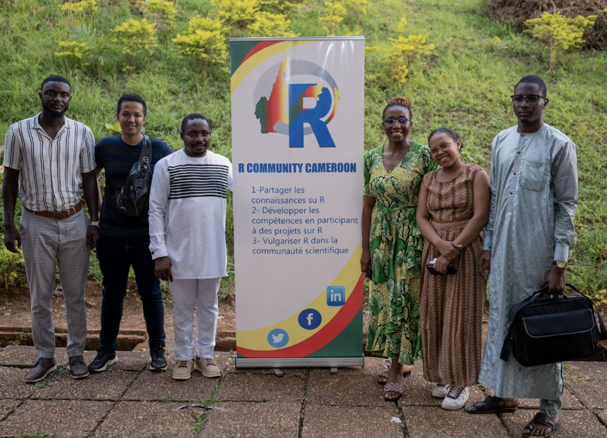
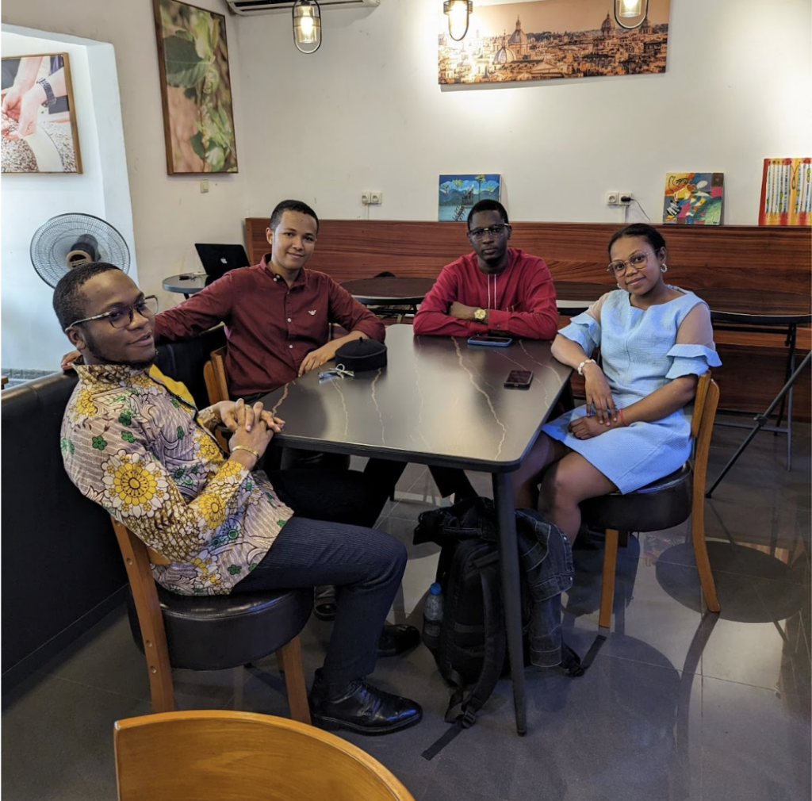
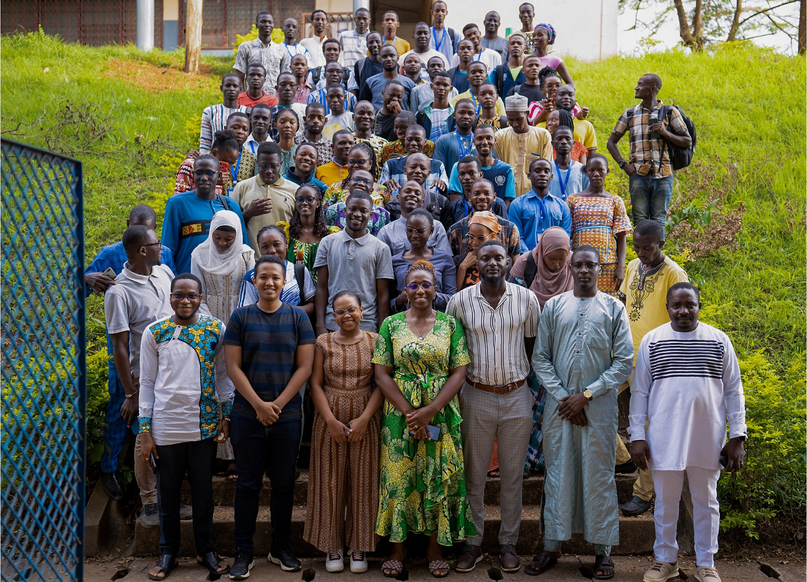

NyAvo RATOVO-ANDRIANARISOA, the co-founder of the R Community Cameroon, recently spoke with the R Consortium about the rapid growth of the R community in Cameroon and the impact of R on local research and data analysis. NyAvo provided insights into the community’s activities, such as developing an R community website using Shiny and implementing innovative projects like a custom search application. He also discussed the challenges and strategies in building a robust R ecosystem in Central Africa.
Please share your background and involvement with the RUGS group.
I am a statistical engineer from the Institute of Statistics of Central Africa in Cameroon, originally from Madagascar. Currently, I serve in a monitoring and evaluation role with the United Nations. My journey with R began about five years ago as a student. I started learning R during my studies and expanded my expertise by freelancing as a Shiny developer. Over time, I’ve also gained experience with OCR technology, working with Tesseract and utilizing Google Cloud Colab’s API Amazon Web services for R and artificial intelligence models.
With a solid statistical background, I specialize in data mining. In 2020, before learning about the R Consortium campaign, I had already envisioned creating an R community in Cameroon. After discussing the idea with some colleagues and discovering the potential support, it became the perfect opportunity to bring this vision to life. My colleagues and I officially launched the R Community Cameroon at the beginning of this year.
I would like to mention my colleagues who have co-founded the group with me: Romain TCHAKOUTE, Idrissa DABO, Saidou BOUREIMA, Mianala MANAMBIRAVAKA, and Ronald DJEUMEN.

Can you share what the R community is like in Cameroon?
Cameroon is home to one of Central Africa’s largest science schools. I am part of a vibrant academic community of 30 members from several nationalities. This environment brings together some of the brightest minds, and R is an integral part of our curriculum. However, our use of R goes beyond basic statistics and plotting; we focus on more sophisticated applications, such as Monte Carlo estimation, model development, and advanced R programming.

Several professors in our school possess strong statistical backgrounds and rely on R for their research. Additionally, our alums who have transitioned into the industry continue to leverage R for data analysis. While Cameroon has a limited amount of data, we conduct numerous surveys. The initial step most of us take is data cleaning, predominantly using R. Once the data is clean, we employ Quarto to generate automatic reports, allowing us to summarize survey results quickly. Some of my colleagues also explore other functionalities of R, like creating applications with R Shiny.
Another significant group is comprised of economics students or those working on their theses. They often seek our assistance to learn R for tasks such as descriptive statistics and building logistic models.
Do you recommend any techniques for planning for or during the event? (Github, Zoom, other.) Can these techniques be used to make your group more inclusive to people unable to attend physical events in the future?
Currently, we rely on PowerPoint to create posters for our events and Google Meet for online meetings before having the Meetup Pro account provided by R Consortium. Many of us, the co-founders of the community, are technicians, so we also use Word for various tasks. However, leadership skills have been crucial in convincing people to join our vision. To engage others, we often organize dinner or lunchtime meetings. We’ve invested significant effort into these initiatives, and through them, we’ve successfully negotiated several partnerships. Initially, I contacted colleagues at the National Institute of Statistics to rally support for our cause.
Our community now includes students and academics, and some PhD doctors are still in the learning phase. I discussed creating a community in Cameroon, asking what value we could offer to encourage their participation. I proposed that they become co-founders of the community, a role they could highlight on their resumes. Seven people have already stepped up as leaders within our group.
We’re active both online and in person. It’s important to note that we organize two types of meetings. The first is an internal meeting with our community leaders, typically attended by around seven people. We use a WhatsApp group for communication and usually meet monthly for lunch at a restaurant for these meetings. The second activity involves larger groups. For these, we first coordinate with the administration, such as the school mentioned earlier, who then communicate with the students. We also document and share these activities online to inform others, though most of our communication is direct and specific.

For example, after explaining our vision to a university contact, they were interested and agreed to offer a course at their institution. We then coordinated with the student body leader, planned a session, and shared the event online. We even hired a professional photographer to capture the event, sharing the photos with the school for further distribution. However, we haven’t yet posted about this activity on LinkedIn.
Looking ahead, we’re planning a session with another school—the statistical school where I studied. We’re currently in discussions with their management. Once we’ve had our conversation, possibly next week, we’ll talk with the student leaders. After the session, we plan to share our activities online, including photos, to highlight what we’re accomplishing in Cameroon.

Do you have any upcoming events planned for the group?
We have an upcoming event that I consider one of the most important we’ve planned. It is our group’s quarterly meeting. The main objective of this meeting is to develop our R community website using Shiny. It will be a workshop where we’ll gather in one place and form small groups comprising beginners and experienced members. During the workshop, we’ll collaborate to code and discuss ideas, and ideally, by the end of the session, we will have the code for our community website ready for deployment.
We’re currently facing some logistical challenges to organize this event. In Cameroon, when we organize events, we strive for perfection, ensuring everything from photography to visibility is top-notch. We’re searching for a suitable hotel venue to host our event.
What trends do you currently see in R language and your industry?
In Cameroon, Quarto is one of the most popular packages we promote during our R community sessions. Another widely used package is R Markdown. While I primarily use R Markdown to produce outputs for my job, I am also working on becoming more proficient with Quarto, as it is the future of reporting and documentation.
I frequently use the tidyverse, tidyr, labelled, and haven suite of packages for data cleaning and reporting. A significant part of my job involves data cleaning, and I rely on tidyverse in conjunction with Quarto for these tasks.
We also utilize R for machine learning, though there is still potential for improvement in this area. We are focused on leveraging Shiny, Quarto, and tidyverse for our work.
Please share about a project you are working on or have worked on using the R language. What is the goal/reason, result, or anything interesting, primarily related to your industry?
We are currently working on an exciting project that is still in progress. The aim is to develop an application inspired by the functionality seen in the movie Fast and Furious, where users can search for information on the Internet. We are utilizing the httr package to collect data from online sources.
The application will enable users to input a search term, such as “lion in Cameroon,” and receive a dataset with all relevant information. Our goal is to provide high-quality data for researchers and other users, which involves considerable effort to ensure the accuracy and usefulness of the data.
How do I Join?
R Consortium’s R User Group and Small Conference Support Program (RUGS) provides grants to help R groups organize, share information, and support each other worldwide. We have given grants over the past four years, encompassing over 68,000 members in 33 countries. We would like to include you! Cash grants and meetup.com accounts are awarded based on the intended use of the funds and the amount of money available to distribute.